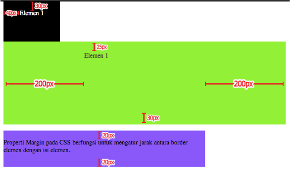

-
CSS Box Model & Dimension
Sebuah elemen HTML dapat kita anggap sebagai sebuah box/ kotak. Digunakan pada saat kita akan merancang tampilan sebuah website. Pada dasarnya berfungsi sebagai tempat yang membungkus isi dari elemen-elemen HTML. Tag yang biasanya digunakan untuk merancang tampilan adalah (div), walaupun tag lain juga bisa menerapkan box model. Terdiri atas 4 bagian: Margin, Border, Padding, Content.
text bayangan
-
CSS Padding
CSS padding properties digunakan untuk menentukan spasi antara border elemen dengan isi element, padding tidak bisa diisi nilai negatif.


-
CSS Border
Sama halnya pada HTML, CSS juga memilki border. Border adalah properti yang digunakan untuk menentukan gaya, lebar, dan warna dari tepi sebuah elemen. Properti "border" dapat diterapkan pada elemen HTML seperti div, paragraf, gambar, dan lainnya.
text bayangan
text bayangan
Page 2 of 5